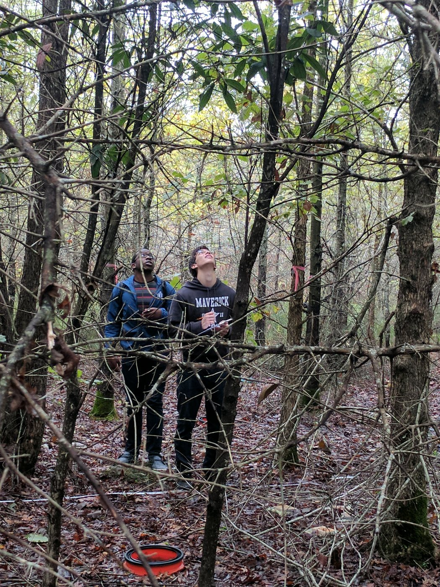
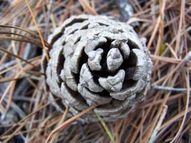
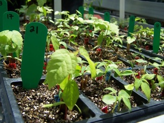

Wright Lab
Biodiversity & Ecosystem Function
Research
Two questions drive the lab's work: how does environmental modification by organisms shape community structure and ecosystem function, and which aspects of biodiversity most regulate that function? Though much of the lab's research has focused on wetland plant communities, the group is willing to study any organism and work in any ecosystem to answer questions that interest it — from tropical streams to desert shrublands — combining observational and experimental approaches with modeling to develop and test hypotheses and build towards synthetic ecological theory.
Current projects

NSF Coastal SEES
Climate change is transforming the outer edge of the Southern US coastal plain. As ocean waters increasingly penetrate freshwater-dependent landscapes — "saltwater intrusion" — the resulting salinization can reduce crop and timber yields, decrease ecosystem carbon sequestration, and degrade coastal water quality. This project focuses on saltwater intrusion across North Carolina's Albemarle-Pamlico peninsula, building a toolset for place-based understanding of coastal systems, generating outcomes with predictive value for stakeholders, and identifying how information can be used to enhance coastal sustainability and guide management of similarly affected regions worldwide.

Stemming from the lab's research on the ecological impacts of changes in fire frequency, this project asks whether species with higher levels of intraspecific variability in key leaf traits have more stable demographic parameters across years and environments — and whether that stability scales up to greater stability at the ecosystem level. The work draws on one of the largest existing (and continuing) databases on plant traits.

Microbes frequently migrate as whole communities and merge with other microbial communities along with their environments — a process called community coalescence. This project characterizes microbial community membership and activity at three aquatic environments where coalescence occurs (a coastal wetland experiencing seawater intrusion, a thermally-stable spring flowing into a blackwater river, and a hot spring flowing into a cooler mountain stream), tracks community response to experimentally-imposed coalescence in the lab, and analyzes the results to disentangle the environmental and biotic factors that determine which organisms persist after two communities merge.
Work with BioMERGE synthesizing conflicting results across the biodiversity–ecosystem function literature: how functional diversity should be measured, whether functional classification schemes based on global patterns apply to smaller-scale variability, and how higher trophic levels can be incorporated into models that are primarily plant-based. Much of this work centered on a large-scale biodiversity experiment combining a field experiment at a wetland restoration site with an intensive study of morphological and physiological trait variation among herbaceous species used in North Carolina wetland restoration.
With Dr. Jason Fridley (Syracuse University). Explored why old fields in the Northeast U.S. can persist for decades in an herbaceous state while those of the Southeast typically support closed pine canopies in under a decade, testing the influence of climate, soil fertility, and species pool across six old-field sites spanning the Eastern Deciduous Forest from Syracuse, NY to Tallahassee, FL, to predict how climate change could alter the pace of woody encroachment.
International collaboration; local collaborator Dr. Charles Mitchell (UNC). A grassroots, globally coordinated experiment across 40+ grassland sites testing how nutrient addition and consumer exclusion (via fencing) affect soil nutrients, plant biomass, and plant species identity — quantifying the combined global impacts of altered nutrient budgets and changing herbivore/consumer communities.
A trait-based approach to predicting how vegetation composition and structure change along gradients from upland Longleaf Pine savannas to streamhead pocosins under different prescribed burning regimes at Fort Bragg, North Carolina — identifying thresholds of change to help inform strategic prescribed-fire management under increasing restrictions on its use.